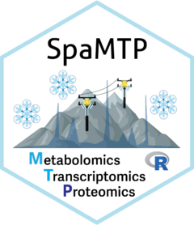

Construct an interactive pathway network visualization
Source:R/PathwayNetworks.R
PathwayNetworkPlots.RdBuilds a self-contained data payload and an interactive D3 visualization for selected pathways across spatial clusters. Topology lookup, edge preparation, differential-expression matching, and matrix extraction are indexed so they are not repeated for every cluster-pathway pair.
Usage
PathwayNetworkPlots(
SpaMTP,
ident,
regpathway,
DE.list,
selected_pathways = NULL,
path = getwd(),
SM_slot = "counts",
ST_slot = "counts",
colour_palette = NULL,
SM_assay = "SPM",
ST_assay = "SPT",
analyte_types = c("genes", "metabolites"),
annotation_source = c("current", "auto", "legacy"),
annotation_score_threshold = NULL,
annotation_score_floor = 0.01,
metabolite_detection = c("leading_edge", "annotated"),
image = "slice1",
verbose = TRUE,
top_n_pathways = 10L,
max_nodes = 500L,
label_mode = c("detected", "all", "none"),
max_spatial_points = 50000L,
layout_mode = c("repulsion", "force", "radial", "bipartite")
)Arguments
- SpaMTP
A
SpaMTPSeurat object containing spatial metabolomics and/or spatial transcriptomics data. Metabolomics data must first be annotated byAnnotateSM().- ident
Metadata column used to identify spatial clusters or regions.
- regpathway
Data frame returned by
FindRegionalPathways().- DE.list
One differential-expression data frame per requested analyte type. Data frames must contain
cluster,gene,avg_log2FC(orlogFC), andp_val_adj(orFDR). A named list is recommended.- selected_pathways
Optional pathway names or source IDs. Matching is case-insensitive. When
NULL, the most important pathways are selected by summed absolute NES.- path
Output directory for the generated HTML file.
- SM_slot
Layer containing spatial-metabolomics values.
- ST_slot
Layer containing spatial-transcriptomics values.
- colour_palette
Colours used for the spatial abundance raster.
- SM_assay
Spatial-metabolomics assay name.
- ST_assay
Spatial-transcriptomics assay name.
- analyte_types
One or both of
"genes"and"metabolites".- annotation_source
Metabolite annotation provenance. The default,
"current", requires the indexed, scored RaMP annotation output."auto"permits a warned legacy fallback and"legacy"requests it explicitly.- annotation_score_threshold
Minimum indexed annotation score used for metabolite matching. When
NULL, the threshold recorded byFindRegionalPathways()is reused (default =NULL).- annotation_score_floor
Lowest annotation score embedded in the HTML for interactive filtering. It is automatically lowered when the initial
annotation_score_thresholdis smaller (default =0.01).- metabolite_detection
Which metabolite nodes receive detected styling.
"leading_edge"uses only GSEA leading-edge metabolites;"annotated"also includes every score-filtered annotation belonging to the selected pathway, regardless of DE significance.- image
Spatial image/FOV passed to
Seurat::GetTissueCoordinates().- verbose
Display progress messages.
- top_n_pathways
Number of pathways selected when
selected_pathwaysisNULL.- max_nodes
Maximum number of nodes per cluster-pathway view. Detected leading-edge analytes are always retained, followed by their neighbours and high-degree nodes. Use
Infto disable pruning.- label_mode
Initial node-label mode: detected nodes only, all nodes, or no labels. It can also be changed interactively.
- max_spatial_points
Maximum number of spatial points embedded in the HTML. Larger datasets are deterministically downsampled for responsive browser rendering. Use
Infto retain all points.- layout_mode
Initial network layout.
"repulsion"maximises spacing,"force"uses a balanced force-directed layout,"radial"separates analyte classes into rings, and"bipartite"separates genes and metabolites vertically. It can also be changed interactively.